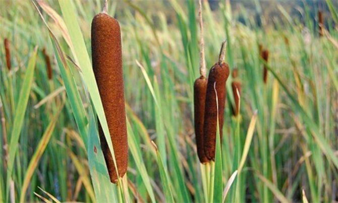
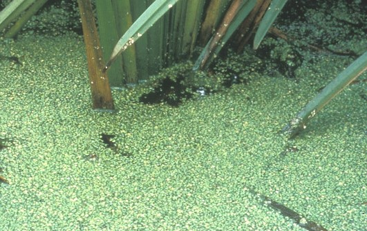
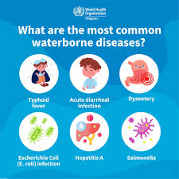
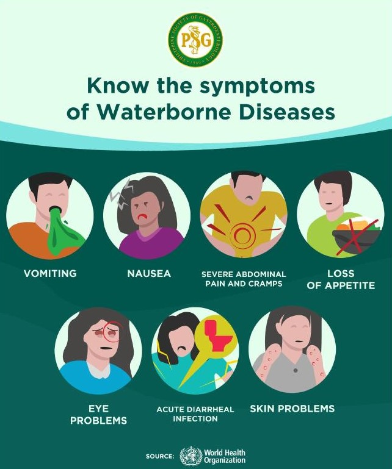
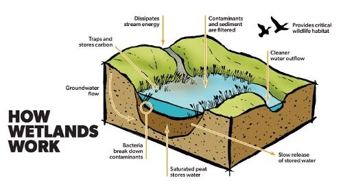

One reason why I chose this topic is because of a trip I went on with my school to the New York City Department of Environmental Protection. I learned that one of the filtration methods in the wastewater treatment process involves plants, and I was very interested in learning about how plants help filter water. I also chose this topic because I live by a bay, where many people fish, kayak, and canoe. However, my family and I are always concerned about falling into the water and getting sick from the pollution. I chose to focus on wetlands specifically by coastal areas like bays, rivers, and ponds. These wetlands help remove these pollutants and lessen the harmful exposure, benefiting plant and animal health and recreational purposes for humans.
Project Goals
1. To explain how wetlands work in a way that is easily understandable. While I was doing the research for this project, I discovered that a lot of the websites used very technical terms that were difficult for me to understand, so I found myself having to constantly pause and look up definitions. The reason why this website stands out from others is because I am simplifying this information and explaining it in ways that are easier for people to understand and learn from, no matter their age or whether or not they are currently in the field.
2. To teach people why wetlands are important, how they work, and how people can help take care of them. The reason why we have to help take care of the wetlands is because they are important, but they are being ruined. While wetlands can clear up normal amounts of pollution, they can still be overwheled when humans cause large amounts of pollution. Therefore, humans have to help maintain the wetlands and prevent them from being overwhelmed.¹
3. Make the research into a website so it is easily accessable. The reason I am coding the research into a website is because it’s an efficient way to share this information. If I leave this research as a slideshow, the only people who will be able to access it are the people who I specifically share the slideshow with. However, if I put this research into a website, I have the opportunity to publicly publish this website in the future, enabling anyone who searches for wetlands to be able to see it. This will help share this research with more people.
1. Environmental Protection Agency, “Threats to Wetlands,” https://www.epa.gov/sites/default/files/2021-01/documents/threats_to_wetlands.pdf
What Are Wetlands, the Composition of Wetlands, and Where are They Found?
Wetlands are areas where the land does not drain well, making the soil saturated/ flooded with shallow water.² They occur worldwide in areas like riverbanks, coastlines, depressions, and flat regions that have high rainfall.² A wetland can be defined by the types of plants that grow in it.² There are 4 main types of wetlands; swamps, marshes, estuaries, and bogs.² Each one is known for different characteristics:
Swamps contain water logged soil, which is surrounded by trees and shrubs. They occur where drainage is poor, and can be either freshwater or saltwater.²
Marshes contain soft plants and are made up of shallow water. They can be freshwater or saltwater.²
Estuaries also contain soft plants, but happen where freshwater meets saltwater. One example of this is when sea levels, which are saltwater, rise and flood rivers, which are freshwater.³
Bogs contain soft spongy ground that mainly consist of partially decayed plant matter.²
Common plants found in wetlands that help filter the water include:
Cattails (Typha species), which are most commonly found in marshes⁴
Reeds (Phragmites species), which are most commonly found in marshes
Water Hyacinth (Eichhornia species), which are most commonly found in marshes⁴
Duckweed (Lemna species), which are most commonly found in marshes⁴
Willow Trees (Salic species), which are most commonly found in swamps⁴
Common Cottongrass (Eriophorum angustifolium), which are most commonly found in bogs 11
Eelgrass (Zostera marina), which are most commonly found in estuaries12
If a wetland is being planted, native plants should be used, because they survive the best in their native environment and can not become an invasive species.13

Cattails5Reeds6Water Hyacinth7Duckweed Up Close8

Duckweed from Far9Willow Tree10Common Cottongrass11Eelgrass12
Microorganisms are living organisms that are too small to be seen with the naked eye. They are typically found in air, soil, water and inside larger organisms. Many microorganisms are essential for life and play critical roles in ecosystem function.14 The microorganisms in wetlands help with the chemical filtration process by breaking down pollutants into less harmful forms. 15
2.New York State Department of Environmental Conservation, “Wetlands,” https://dec.ny.gov/nature/waterbodies/wetlands
3. https://www.coastal.ca.gov/publiced/UNBweb/owow_entire.pdf
4.“Can Plants Be Used to Filter Water?” https://iere.org/can-plants-be-used-to-filter-watCalifornia Coastal Commission, “Ocean Web of Life,” https://www.coastal.ca.gov/publiced/UNBweb/owow_entire.pdf
5. https://www.chesapeakebay.net/discover/field-guide/entry/cattails
6. https://liisma.org/common-reed-phragmites-australis/
7. https://www.feedipedia.org/content/water-hyacinth-eichhornia-crassipes-flower
8. https://www.naturespot.org/species/common-duckweed
9. https://share.google/BhCpH2fR6ptGMhbVW
10. https://www.the-tree-man.co.uk/tree-id/willow-tree
11. https://mnfi.anr.msu.edu/communities/description/10666/bog
12. https://www.environment.nsw.gov.au/topics/water/estuaries/biodiversity-in-estuaries/plants-in-estuaries#-seagrasses-
13. Food and Agriculture Organization, “Use of Native Plants,” https://openknowledge.fao.org/server/api/core/bitstreams/5ad54656-c4a9-4469-89a3-c1ca3d786dd6/content
14. https://www.ncbi.nlm.nih.gov/books/NBK279387/
15. International Energy and Resources Education, “Can Plants Be Used to Filter Water?” https://iere.org/can-plants-be-used-to-filter-water/
What are the Benefits of Having Wetlands?
Wetlands improve water quality1
They help to prevent waterborne diseases1
They help with flood control by acting like natural sponges and absorbing and storing extra rainfall1
They help remove pollutants from the water.1
Many pollutants exist in water in coastal areas. Some examples of pollutants that wetlands help remove from the water include:
Sediment- gravel, sand, clay, and silt particles that are suspended in the water. They carry bacteria, make the water appear cloudy, and cause bad taste or odor. Sediment enters the water from soil, dirt, rusting pipes and infrastructure, and construction site runoff.4 Sediment in Water5
heavy metals- naturally occurring metallic elements like mercury, lead, copper, arsenic, cadmium, and chromium. They enter the water from rusting pipes, mining, pesticides,
fertilizers, etc. if consumed, they can cause neurological issues, organ damage, cancer, or other health issues.4 Heavy Metals in Water6
pesticides- chemical substances that are used to control pests. They are transported to the water through agricultural runoff from rain, snow, and irrigation. They are toxic to aquatic life. While short-term exposure can cause headaches, fatigue, diarrhea, nausea, rashes, irritation, and dizziness, long-term exposure can cause chronic illnesses, neurological disorders, a weakened immune system, and reproductive harm.4
pathogens- disease causing species in the water that come from sewers and animal waste4

7

8
storm water runoff- rain or snowmelt that travels over land, streets, and rooftops, picking up pollutants and transporting them to the water.4 Polluted Storm Water Runoff Entering Sewer9 10
Fuel and oil spills- come from boats, offshore drilling operations, and pipeline ruptures. Since oil is generally less dense than water, it floats to the surface and prevents oxygen and sunlight from entering the water, harming aquatic life. The oil causes respiratory, developmental, and reproductive issues in fish and shellfish. It also coats the fur and feathers of marine animals, ruining their natural insulation and causing hypothermia.4 Juvenile Kemp's ridley sea turtle oiled in the Deepwater Horizon spill in 201011
One Example of a negative process caused by pollutants in the water is eutrophication. Eutrophication is the process where an excess amount of nutrients, mainly nitrogen and phosphorus, cause algal blooms in coastal areas. Algal blooms
are excess algae growth, which are dead zones where aquatic life can not survive. Excess nutrients cause algal blooms by acting like fertilizers and triggering the rapid growth of algae. When the algae in
these algal blooms die, they decompose and consume large amounts of oxygen. Due to the depletion of oxygen, aquatic life is killed. The algae also blocks out sunlight, creates toxins, degrades water quality, and harms ecosys
tems. These excess nutrients come from chemical fertilizers (nitrogen and phosphorus are present in the chemical fertilizers since they are essential for plant growth. However, when extra amounts of the nutrients are washed
into the water, the excess amount causes algal blooms) , fossil fuels (fossil fuels release large amounts of nitrogen oxides into the atmosphere, which settle in the water and provide an excess
of nitrogen), stormwater runoff(the water runoff picks up fertilizers, animal wastes, and other
substances and transports them into bodies of water, causing an excess of nutrients), and wastewater from sewer systems (by discharging human waste and detergents
that contain nitrogen and phosphorus into the water through inadequately treated sewage).2 Algal Bloom in Water3
1. San Antonio River Authority, “The Wonders of Wetlands and Why We Need Them,” https://www.sariverauthority.org/blog-news/the-wonders-of-wetlands-and-why-we-need-them/
2. Environmental Protection Agency, “Basic Information about Nutrient Pollution,” https://www.epa.gov/nutrientpollution/basic-information-nutrient-pollution
3. https://en.wikipedia.org/wiki/Harmful_algal_bloom
4. Save The Bay, “Threats to the Bay,” https://education.savingthebay.org/wp-content/guides/Threats-to-the-Bay.pdf
5. https://www.rusco.com/blog/how-do-i-know-how-much-sediment-is-in-my-water
6. https://www.sciencebuddies.org/blog/heavy-metals-turn-waterways-orange
7. https://www.facebook.com/whowpro/posts/waterborne-diseases-are-caused-by-viruses-and-bacteria-that-enter-the-body-throu/1856719831625644/
8. https://psgastro.org/what-are-waterborne-diseases/
9. https://hvatoday.org/polluted-stormwater-runoff/othermia
10. https://www.mdt.mt.gov/pubinvolve/stormwater/runoff.aspx
11. Blair Witherington/Florida Fish and Wildlife Conservation Commission, https://www.noaa.gov/education/resource-collections/ocean-coasts/oil-spills
The Process of how Wetlands Filter Water
The process of how wetlands filter water is split between physical and chemical processes.
The physical process begins with sedimentation. Sedimentation occurs as water flows through the wetland. The dense vegetation in the wetland causes the flow rate of the water to slow down, causing the suspended particles- the heavier particles of pollution in the water- to settle to the bottom. The vegetation also acts as a physical barrier by trapping the particles and preventing them from flowing further downstream.¹ The removal of the suspended solids in this step eliminates turbidity (the visual measurement of the cloudiness of the water caused by suspended solids and how the light shines through the water) and improves water clarity (the measure of how deep the light can penetrate through the water, or simply the transparency).¹ Clear water, where the sunlight is not blocked by suspended solids, allows light into the water for photosynthesis, which supports healthier aquatic ecosystems).¹ The next step in the physical process is called bioaccumulation. This process is when the plant roots absorb nitrogen and phosphorus from the water, preventing the previously stated process of eutrophication.² The plants absorb the nutrients through their tiny root hairs, which use energy to transport nutrients into their vascular systems.²
The chemical process of how wetlands filter water happens through bioremediation. Bioremediation is the process where microorganisms from the wetland’s roots and soil break down pollutants into less harmful forms by using the pollutants as a food source.³ This process happens through
oxidation and reduction, which are the chemical reactions that transform the pollutants into less toxic forms.⁴ Oxidation refers to when a substance loses electrons to oxygen or another substance and becomes oxidized. This process usually takes place when oxygen is present.⁴ Reduction refers to when a substance gains electrons and becomes reduced. This process usually occurs when oxygen levels are low, causing the substance to gain electrons from other chemicals, instead of oxygen.⁴ The electrons are supplied by microorganisms. Organic matter are the dead plants, roots, leaves, algae, and waste in the wetlands. Microorganisms break down the organic matter for energy. When this happens, the organic matter is oxidized/ loses its electrons, and the electrons are released.³ Organic matter → CO2 + electrons Reduction reactions dominate over oxidation reactions in wetlands, because wetland soils are often waterlogged, making it hard for oxygen to enter. These reactions, referred to as redox reactions, affect soil chemistry, which plants can grow, and which animals can survive, due to the specific chemical reactions that take place in the environment.⁴ One example of a redox reaction that removes a pollutant in wetlands is denitrification, which is the process that removes nitrogen from the water.² When nitrogen is oxidized, it causes algal blooms. When it is reduced, it turns into harmless nitrogen gas and leaves the water.² The equation is:
2NO3− +10e− +12H+ → N2 +6H2O
NO3− (nitrate) is the dissolved nitrogen in the water e− (electrons) Since wetlands are low in oxygen, the electrons go to other substances instead of oxygen, including nitrate. For denitrification, nitrate gains the electrons, turning it into nitrogen gas.² H+ (hydrogen ions) are present in wetland soils N2 (nitrogen gas) is harmless gas that escapes into the atmosphere

5
1.San Antonio River Authority, “The Wonders of Wetlands and Why We Need Them,” https://www.sariverauthority.org/blog-news/the-wonders-of-wetlands-and-why-we-need-them/
2. International Energy and Resources Education, “How Do Wetlands Filter Water?” https://iere.org/how-does-wetlands-filter-water/
3. International Energy and Resources Education, “Can Plants Be Used to Filter Water?” https://iere.org/can-plants-be-used-to-filter-water/
4. Khan Academy, “Oxidation–Reduction Reactions,” https://www.khanacademy.org/science/ap-chemistry-beta/x2eef969c74e0d802:chemical-reactions/x2eef969c74e0d802:oxidation-reduction-redox-reactions/a/oxidation-number
5. https://www.sariverauthority.org/blog-news/the-wonders-of-wetlands-and-why-we-need-them/
The Aspects of the Water that are Affected after the Filtration
Physical aspects: color (sedimentation), turbidity (sedimentation), clarity (sedimentation), odor (bioremediation), floating matter (sedimentation)¹ Biological aspects: algae (removal of nitrogen and phosphorus from the water, denitrification) and bacteria¹ Chemical aspects: pH levels and nutrients¹
The Benefits of Using Wetlands Opposed to Other Filtration Methods
Wetlands are not as expensive as complex filtering systems¹
They are environmentally friendly- they don’t need harsh chemicals or a lot of energy¹
They require less maintenance, because plants regenerate and don’t need big repairs¹
The wetland’s plants enhance the beauty of the landscape¹
Wetlands can be used as habitats for animals²
They can be used in residential areas¹
1.International Energy and Resources Education, “Can Plants Be Used to Filter Water?” https://iere.org/can-plants-be-used-to-filter-water/
2.Wetlands Work, “Wetland Benefits for Wildlife,” https://www.wetlandswork.org/wetland-benefits/wildlife
How People Harm Wetlands
While wetlands are able to clear up a normal amount of pollution, they can still be overwhelmed by an extreme excess caused by humans.¹
Bioaccumulation, which is a buildup of nutrients and heavy metals in organisms, is caused by pollution. It creates toxins in the water that aquatic life absorbs.¹
People harm wetlands by allowing agricultural runoff, sewage runoff, and urban runoff to flow into wetlands.¹
People harm wetlands by introducing non-native animals and plants which destroy or compete with the native species.¹
1.Environmental Protection Agency, “Threats to Wetlands,” https://www.epa.gov/sites/default/files/2021-01/documents/threats_to_wetlands.pdf
What We Can Do to Help Maintain Wetlands
Conserve and restore wetlands on private property.¹
Be careful to avoid wetland alteration or degradation(breakdown)during project construction.¹
Reduce the amount of fertilizers and pesticides used in gardens and lawns.¹
Dispose of litter into appropriate trash containers.¹
Use non-toxic cleaning products, such as phosphate free detergents, in order to prevent algal blooms.¹
Do not plant non-native plant species, because they might become invasive.¹
Spread the word about the importance of wetlands and the threats they face.¹
Support wetland protection initiatives by donating time, materials, or money.¹ One example of a wetland protection initiative is Marsh Mania, which is an award winning annual event held in Galveston Bay Area, Texas. It involves volunteers restoring salt marsh habitats. Since its founding, there have been 8,000 volunteers who have planted and restored more than 200 acres of wetlands.² This initiative not only restores marshlands, but also raises awareness and appreciation of wetlands.
There are some laws that exist to protect and restore wetlands. One example is The National Environmental Policy Act (NEPA), which was signed into law on January 1, 1970.³ NEPA requires federal agencies to study the environmental effects of their proposed actions before making decisions, such as issuing permit applications or constructing highways and other public owned facilities.³ This policy requires the federal government to do their best to create and maintain conditions under which man and nature can exist in productive harmony.³
1.U.S. Fish and Wildlife Service, “10 Ways You Can Help Conserve Wetlands,” https://www.fws.gov/story/2023-06/10-ways-you-can-help-conserve-wetlands
2.Galveston Bay Foundation, “Marsh Mania,” https://galvbay.org/marsh-mania/
3.Environmental Protection Agency, “What is the National Environmental Policy Act?” https://www.epa.gov/nepa/what-national-environmental-policy-act
Conclusion
Wetlands are an extremely important ecosystem. They improve water quality by trapping or breaking down pollutants, prevent waterborne diseases, help with flood control, act as habitats for animals, etc. Since wetlands help defend us from pollutants, it is our job to help wetlands by maintaining them and limiting the pollution we expel into the water. This will enable them to continue to be able to fight pollution in the “Wetland Wars”.


 10
10

 2
2